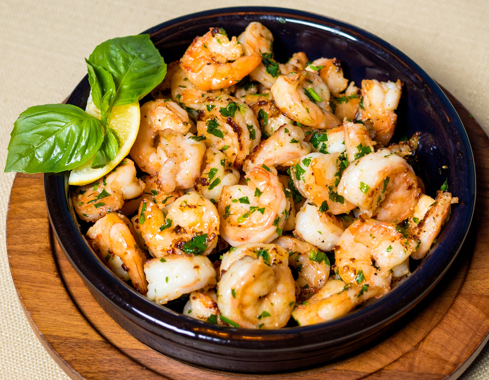

Air Fryer Shrimp

Description
Yet another one of my favorite internet found recipes. Such a staple in my home.
Ingredients
- 2lbs of Shrimp
- 4 Teaspoons Olive Oil
- 1 Teaspoon Garlic Powder
- 1/2 Teaspoon Paprika
- 1 Teaspoon Italian Seasoning
- 1 Teaspoon Salt
- 1/2 Teaspoon Black Pepper
Steps
- Clean the shrimp by removing the shells and veins
- Run under tap water and tap with a paper towel to dry
- Mix seasonings and oil into a small bowl
- With a brush, apply seasoning generously to shrimp
- Add shrimp to air fryer in a single layer
- Cook at 400F for 8 minutes
Enjoy!